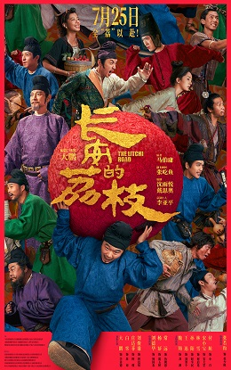
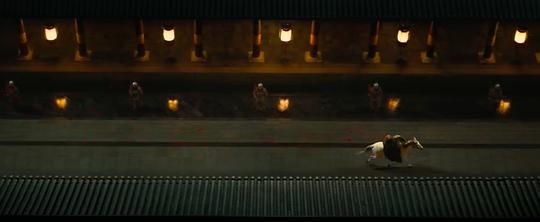
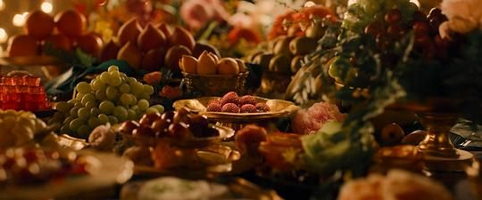

毁掉一个老实人的前半生，只需要一张薄得几乎透光的黄纸。唐天宝年间，上林署的敕令上原本写着"荔枝鲜"，上司刘署令用一张写着"煎"字的贴黄轻轻盖上去，趁着酒酣耳热，把刚在长安买了新房的九品小吏李善德哄上了桌，签下了名。一字之差，喜宴变成了刑场。蜜饯能放半年，鲜荔枝却是"一日色变，两日香变，三日味变"，而岭南到长安足有五千四百里。次日酒醒，李善德撕开贴黄回去对质，刘署令不慌不忙，转头反问满堂同僚：你们听见我说荔枝煎了吗？一屋子昨日还把酒言欢的人，齐刷刷低下了头。没有人敢替他说一句真话，因为谁开口，下一个接这趟死差的就是谁。
大鹏给这出古装戏刷了一层极近现实的灰。李善德廿四岁明算科及第，在长安干了半辈子九品监事，做账老实、不肯造假，既没有给上司留出油水，又偏偏掏空积蓄、背上招福寺高利贷"香积契"在京城买下一处院落。这样一个把半生体面和一家老小都押在长安城里的人，正是官场最趁手的替罪羊——内侍鱼朝恩把这桩没人敢接的差事甩给最软的上林署，上林署便顺手甩给最老实的李善德。院子里红花漫天落下的时候，妻子郑玉婷还含笑憧憬着一家三口的安稳日子，女儿小葡萄刚学会欢喜，那张贴黄就已经替他们算好了价钱。
李善德本打算写一纸和离书，好让妻女免受牵连。拦住他的是同乡好友杜少陵——这位右卫率府兵曹参军看得比谁都透，劝他"退无可退，何不向前拼死一搏"。于是李善德说出了全片最倔强的一句话：就算失败，我也想知道，自己倒在距离终点多远的地方。这句话让人热血，也藏着全片最深的反讽——他以为只要把一道算术题解出来，就能在长安活下去；他当时还不知道，自己拼命奔赴的那个终点，本身就是一座会吃人的祭坛。
一路向南三十一天，他从规矩森严的长安走进了湿热野蛮的岭南。地方节帅何启光与心腹师爷赵辛民一眼看穿这差事的凶险：办不成要掉脑袋，办成了往后年年都要办，更是甩不掉的祸根。推诿与敷衍之间，偏偏有三个边缘人把心和命押在了李善德身上。岭南商贾苏谅，在兄长苏源和父亲眼里一直"不是做生意的料"，他看中五府通行符牒，更想靠这一回证明自己，慷慨解囊，"投大使一个前程"；峒族少女阿僮守着祖辈留下的荔枝林，直率通透，一句脱口而出的"圣人是谁"，轻飘飘捅破了整个盛唐庙堂的神话，却仍把保鲜的诀窍和父辈栽下的果树交给了这个执拗的傻官；还有何启光府里的家奴林邑奴，平素被人唤作"蠢奴"，只因李善德待他像个人，便跟着四处奔波，心里揣着一个卑微到发烫的念想——"去，长安"。
明算科出身的李善德真的把不可能算了出来。连枝带土、四路试运、飞鸽传书、水陆接力、冰块降温——十一日抵长安。可当他兴冲冲捧着方案回到京城，户部、太府寺、吏部、礼部各衙门立刻演了一出滴水不漏的踢皮球，鱼朝恩索性罗织罪名将他投入大狱。狱中探望他的又是杜少陵，一句话冷得像铁：为官之道，不过"和光同尘，雨露均沾，花花轿子众人抬"。你一个九品小吏把神仙都办不成的事办成了，满朝大员的脸往哪儿搁？杜少陵的悲凉正在这里：他比李善德早看穿长安的规矩，却也只能活在这规矩的阴影里，做个清醒而无力的旁观者。
于是有了全片最令人脊背发凉的一个镜头：招福寺大殿里，右相杨国忠站在巨佛的眼珠处，居高临下俯瞰鱼朝恩与众生。一个凡人把自己站进了神明的眼睛里——权力的傲慢再没有比这更直白的肖像了。鱼朝恩在墙上画一条大金鱼，杨国忠淡淡一句"这鱼大得有点碍眼"，便定下了两派倾轧的底色。走投无路的李善德想起杜少陵的提点，跪下来把方案献给了右相。一块刻着"国忠"的金色令牌到手，天翻地覆：昔日推诿的诸部官员俯首帖耳，连招福寺典座都毕恭毕敬把那纸香积契奉还回来。
可这位精算师的账本，恰恰是在拿到令牌这一刻彻底坏掉的。他提议让苏谅报效朝廷以省国库，杨国忠脸色一沉，反问一句"你们不会有什么勾连吧"——这门差事里的油水岂容外人分润，几句话就把倾囊相助的朋友推向倾家荡产。官府接手转运后层层加码，原定只砍十丛的荔枝树被砍成一百丛，阿僮祖辈的果园满目疮痍；沿途加征"荔枝钱"，逼得黄草驿的驿夫举家逃亡；公文写反方向，官船便冷冰冰地拒不出航；而杨国忠一面说让李善德"安心做事"，一面已暗中将郑玉婷与小葡萄扣作人质。令牌赏给他的不是自由，是一根更结实的绞索。
如果电影只停在控诉权贵，它不过是一出爽利的历史讽刺剧；它真正扎心的地方，是诚实地拍出了李善德自己的共谋。他并非全然无辜。最初把他套牢的，除了刘署令的贴黄，还有他自己对长安一席之地的执念；后来当捷径递到手里，他也接了令牌，拿着倒排的日程去催逼更底层的人，眼睁睁看着朋友寒心、果树倒下，嘴里只剩一句"我让朝廷把钱还给你"。他像每一个被房贷和体面推着走的人一样，想做老实人，却在自保的本能里成了吞噬人的机器上最有效率的那颗齿轮。耶稣曾向一切精于算计的人抛出过一道算不平的题："人就是赚得全世界，赔上自己的生命，有什么益处呢？"（马可福音 8:36）李善德算尽了里数、脚程、马匹和结余，唯独算漏了一件事：当一座地上的城成了非守不可的偶像，人为了留在里面，总会一步步交出自己的良心。

最后一段路，是靠那些被权力踩在脚底的人硬撑下来的。倾家荡产的苏谅接到林邑奴拼死送来的信，不计前嫌率商船赶来化解水路危机；悬崖边上，鱼朝恩派来的刺客骤然发难，林邑奴以命相搏，替李善德护住最后一瓮荔枝，永远倒在了离长安一步之遥的地方。大鹏处理"一骑红尘"的高潮克制得近乎残忍：李善德一夜白头，双目熬得赤红，策着一匹疲惫的白马孤身夜驰长安长街，漫天红尘与散落的木棉花掠过一格格亮着灯的窗棂——窗里的大唐人家照旧饮茶说笑，浑然不知门外飞驰而过的是谁的血汗，更不知盛世已到大限。
而全片最冷的一刀，落在宫宴的案几上。那瓮用半座果园、无数逃散的驿夫和林邑奴的性命换来的鲜荔枝，被端上金盘，摆在满桌奇珍异果之中，小得几乎让人找不见。贵妃的手刚伸过去，就被鱼朝恩报出的下一个节目引开，指尖停在半空，又轻轻缩了回去——那口荔枝，贵妃终究一口没吃。杨国忠拈起一颗尝了尝，面不改色地吐出五个字：就那么回事。三千年前，世上最富足、也最懂得从远方搜罗珍奇的君王所罗门，在遍尝一切荣华之后，写下过一模一样的结语："后来，我察看我手所经营的一切事和我劳碌所成的功。谁知都是虚空，都是捕风；在日光之下毫无益处。"（传道书 2:11）宫宴上那只缩回去的手，就是日光之下一切虚妄荣耀的底片：无数人把命熬成灰，只为供养高位上一个转瞬即忘的念头。

所以李善德在佛前站直腰杆、当面质问杨国忠的那场戏，才让人屏住呼吸。他把那本没人敢念的血账一笔笔念了出来：毁了多少树，赔了多少马，流散了多少百姓——"取之于民，用之于上"。他本已做好赴死的准备，却因圣人恰巧赏下一盘绿李而捡回一命——那盘绿李背后原是鱼朝恩借讨赏拆右相台的算计，并非谁生了怜悯。权力的缝隙漏下一点生机，杨国忠便以运送数量不足为由，将李善德一家流放岭南。
明面上他输光了：丢了官，没了房，从梦寐以求的长安发配到瘴疠之乡。可电影在最后十分钟把整张账本倒了过来。在岭南阿僮的果园里，李善德和妻女一起重新栽下荔枝树，郑玉婷终于用岭南的荔枝和她念叨过的木棉花酿出了酒；林邑奴的墓碑立在山坡上，刻的不再是"林邑奴"，而是"林邑人"。一年后，苏谅的兄长苏源来访，带来两则消息：苏谅远赴波斯，做成了大商——大唐容不下的诚实与契约，只能去海外生长；另一则消息轻得像一声闷雷：安史之乱爆发，潼关失守，长安沦陷了。
李善德捧着鲜荔枝，一颗接一颗往嘴里塞，忽然嚎啕大哭。那是全片最复杂、最动人的一场哭：他哭自己耗尽半生去仰望的那座盛世之城轰然倒塌，也哭命运的荒唐与仁慈——他拼了命想买下一隅的长安，如今烧成了灰；当年以为是灭顶之灾的那纸流放，反倒救了他们一家老小的命。新约里有一句话，像是专为这座一夜倾塌的长安写的："我们在这里本没有常存的城，乃是寻求那将来的城。"（希伯来书 13:14）每一代人心里都有一座长安——一纸房契、一个编制、一场被人看见的体面，总以为挤进城门、站稳脚跟，人生就有了托底。可地上的长安总会起战火，地上的房契总会作废，连最金碧辉煌的帝国，也经不起一声潼关的烽烟。
看到这里，这部电影真正刺痛人的，其实不只是一段荒唐的唐代职场，而是人心里那个更深的绝望：如果高居庙堂的君王只管索取，站在佛眼里的权臣把万民当作筹码，连李善德这样怀着良知的人也只能在自保与共谋之间撕裂，救不回林邑奴，也拦不住城池倾覆——那么世上究竟有没有一位不一样的君王？
福音给出的回答，与长安的逻辑正好颠倒过来。耶稣论到自己来到世上的缘由，说了一句彻底震碎人间权力秩序的话："因为人子来，并不是要受人的服事，乃是要服事人，并且要舍命，作多人的赎价。"（马可福音 10:45）地上的圣人坐在高处，传一道敕令，叫五千里外的百姓、驿夫和果林去替他的兴致埋单；而天上的君王却亲自离开了荣华的宝座，走下尘土飞扬、暗箭密布的绝路。当世上所有人都忙着把黑锅往下甩、在别人的名字上悄悄盖上贴黄的时候，那位全然无罪的主，亲手接过了全人类的死局，走上十字架，替所有背着生存债与良心债的"李善德"付清了全款。
于是林邑奴墓碑上那三个字——"林邑人"——在十字架底下有了更深的回音。在长安的账本里，奴就是奴，驿夫就是耗材，小吏就是替罪羊，一骑红尘掠过长街，无人知晓；但在基督舍命买赎的那座将来的城里，没有一个卑微的名字会被抹去。一切奔跑过的脚印、咽下去的委屈、倒在半路的无名者，都被那位先替我们跑完绝路的君王一一记念，不再称为奴仆，乃称为儿女。
李善德当年说，就算失败，我也想知道自己倒在距离终点多远的地方。那时候他以为终点在长安的朱门之内，后来才明白，跑赢了那场差事，反倒险些输掉一生。幸而终点从来不在长安——不在任何一座会起战火的城里。岭南的木棉花年年照旧开，荔枝树砍了还能再种，而真正叫人不必再靠"看命"活下去的，是那座常存的城已经由基督亲自替我们立下了永不作废的契约。这一回，不签香积契，也不必用半条命去换——他早已替我们跑到了终点。